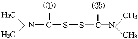
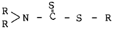
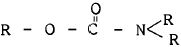
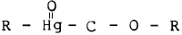
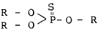

식물보호산업기사 (2004-09-05 기출문제)
1과목: 식물병리학
1. 식물병의 진단에서 유관속 폐색을 일으키는 병은?
- 토마토 풋마름병
- 밤나무 줄기마름병
- 배추 무 사마귀병
- 벼 도열병
(정답률: 68%)

2. 병원균 중 생활사를 완성하기 위해 기주를 바꾸는 현상을 무엇이라고 하는가?
- 중간기주
- 기주교대
- 잠복기
- 감염
(정답률: 93%)
3. 다음 병 중 병원이 토양전염하는 것은?
- 배나무 검은별무늬병
- 오이 덩굴쪼김병
- 벼 흰잎마름병
- 보리 겉깜부기병
(정답률: 75%)
4. 다음 중 시들음을 전형적인 전신병징으로 나타내는 병은?
- 소나무 혹병
- 사과나무 부란병
- 벼 도열병
- 배추 무사마귀병
(정답률: 56%)
5. 배나무 붉은별무늬병의 녹포자는 어느 식물에서 생기는가?
- 배나무
- 향나무
- 까치밤나무
- 포플러
(정답률: 40%)
6. 식물병의 넓은 의미의 생물적 방제에 관한 설명으로 잘못된 것은?
- 토양에 게껍질(키틴)을 시용하여 Fusarium 병을 방제한다.
- Rhizoctonia 의 길항균으로는 Trichoderma 가 잘 알려져 있다.
- Agrocin 84는 과수 근두암종병의 방제에 이용된다.
- Aflatoxin은 Aspergillus flavus 방제에 이용된다.
(정답률: 66%)
7. 대추나무 빗자루병(천구소병)의 치료방법은 어떤 것이 좋은가?
- 옥시테트라싸이클린계 항생제를 수간주사한다.
- 침투성 살균제를 수간주사한다.
- 농용마이신을 엽면 처리한다.
- 피해지에 봉지를 씌워 병균의 전파를 방지한다.
(정답률: 85%)
8. 세포벽을 가지고 있지 않는 식물병원균은?
- Xanthomonas속
- Phytophthora속
- Phytoplasma속
- Xyrella속
(정답률: 77%)
9. 세균에 의한 병으로 진단할 수 있는 단서는?
- 뿌리에 생긴 혹
- 잎에 나타난 모자이크 증상
- 잎의 점무늬병반 둘레에 있는 노란 둘레무리(halo)
- 줄기를 잘라 물에 넣었을 때 단면에서 스며 나오는 우즈(ooze)
(정답률: 56%)
10. 다음 병 방제법으로 잘못 설명된 것은?
- 저항성 품종의 재배는 가장 이상적인 방제법이다.
- 혼작 및 다계품종의 재배는 병 발생을 감소시킨다.
- 접목재배는 수박의 토양전염병 방제에 효과적이다.
- 원예작물의 윤작을 위한 뒷그루 작물로 벼과작물은 적합하지 않다.
(정답률: 70%)
11. 배나무 검은별무늬병의 방제에 가장 효과적인 것은?
- 포장위생
- 합리적인 비배관리
- 밀식
- 약제살포
(정답률: 68%)
12. 바이러스병의 진단법이 아닌 것은?
- 면역 효소항체법
- 봉입체 관찰
- 지방산 분석
- 젤 이중확산법
(정답률: 74%)
13. 바이러스병의 내부병징과 관계가 먼 것은?
- 토마토 모용세포의 봉입체
- 맥류위축병 감염세포의 X-체
- 담배모자이크바이러스(TMV;tobacco mosaic virus) 감염에 의한 엽록체의 대형화 및 수의 증가
- 감자잎말림바이러스에 의한 사부조직의 괴사
(정답률: 64%)
14. 매개충의 알을 통하여 다음 대까지 바이러스가 옮겨지는 병은?
- 벼 오갈병
- 감자 잎말림병
- 오이 모자이크병
- 오이 녹반모자이크병
(정답률: 69%)
15. 식물병원체들을 크기가 작은 것부터 큰 것 순으로 맞게 나열된 것은?
- 바이로이드, 바이러스, 세균, 곰팡이
- 바이로이드, 세균, 바이러스, 곰팡이
- 바이러스, 바이로이드, 세균, 곰팡이
- 바이러스, 바이로이드, 곰팡이, 세균
(정답률: 86%)
16. 고추탄저병의 방제방법으로 적당치 않는 것은?
- 저항성 품종 재배
- 주기적 약제살포
- 종자소독
- 토양소독
(정답률: 57%)
17. 식물에 병을 일으키는 원인을 무엇이라고 하는가?
- 병원
- 병징
- 표징
- 병해
(정답률: 90%)
18. 식물병의 전염원이 될 수 없는 것은?
- 병든 식물
- 광선
- 병원체가 섞여있는 토양
- 병든 종자
(정답률: 92%)
19. 병의 원인을 주인과 유인으로 분명하게 구분하기가 가장 어려운 병은?
- 벼 도열병
- 고구마 무름병
- 콩 탄저병
- 밀 줄기녹병
(정답률: 63%)
20. 다음 설명 중 틀린 것은?
- 진균은 포자를 만드는 것이 많다.
- 식물병원세균은 단세포 생물이다.
- 식물 바이러스병은 방제하기 쉽다.
- 넓은 의미로 볼 때, 부적당한 온도도 식물병의 원인이라고 할 수 있다.
(정답률: 87%)
2과목: 농림해충학
21. 왕무당벌레붙이의 월동 충태는?
- 알
- 유충
- 번데기
- 성충
(정답률: 66%)
22. 곤충과 거미의 다리 마디 수를 비교한 것으로 올바른 것은?
- 곤충이 하나 더 많다.
- 곤충이 두개 더 많다.
- 거미가 하나 더 많다.
- 거미가 두개 더 많다.
(정답률: 58%)
23. 지구상에 곤충이 번창하게 된 원인이 아닌 것은?
- 날개가 있다.
- 몸의 크기가 작다.
- 변태가 가능하여 불리한 환경에 잘 적응한다.
- 온혈동물로 부적당한 환경에서 오래 견딜 수 있다.
(정답률: 86%)
24. 종간 상호작용이라고 볼 수 없는 것은?
- 동종포식
- 이종(異種)간의 경쟁과 포식
- 포식자 - 먹이의 상호작용
- 초식자 - 기주식물 간의 상호작용
(정답률: 76%)
25. 솔잎혹파리 방제를 위한 침투성 약제 수간주입(수간주사)방법은 이 해충의 어느 충태를 구제하는 방법인가?
- 알
- 부화 유충
- 노숙한 유충
- 성충
(정답률: 83%)
26. 곤충의 섭식 행동의 하나로서 곰팡이를 먹는 식성을 무엇이라고 하는가?
- 부식성
- 초식성
- 육식성
- 균식성
(정답률: 83%)
27. 곤충이 알에서 유충(또는 약충), 번데기 시기를 거쳐 성충이 되고, 다시 알을 낳게 될 때까지를 무엇이라 하는가?
- 변태
- 영기
- 탈피
- 세대
(정답률: 83%)
28. 주광성을 이용해서 성충을 유살할 수 없는 해충은?
- 이화명나방
- 솔나방
- 끝동매미충
- 배추흰나비
(정답률: 80%)
29. 곤충의 뇌(腦)중에서 시각에 관여하는 것은?
- 앞대뇌
- 뒷대뇌
- 제3대뇌
- 제4대뇌
(정답률: 91%)
30. 곤충에서 유약충(幼若蟲)호르몬에 해당되는 것은 어느 것인가?
- 페로몬(Pheromone)
- 알라타(allata)체 호르몬
- 앞가슴(前胸腺)호르몬
- 알로몬(allomone)
(정답률: 80%)
31. 다음 중 단식성인 해충은?
- 배추좀나방
- 파밤나방
- 쐐기나방
- 미국흰불나방
(정답률: 68%)
32. 곤충의 체벽에 속하지 않는 것은?
- 표피층(表皮層)
- 진피층(眞皮層)
- 유조직(柔組織)
- 기저막(基底膜)
(정답률: 82%)
33. 깍지벌레는 다음 중 어느 목에 속하는가?
- 벌목
- 강도래목
- 딱정벌레목
- 매미목
(정답률: 56%)
34. 소나무류에 치명적인 피해를 주는 소나무 재선충을 매개하는 곤충은?
- 솔잎혹파리
- 미국흰불나방
- 버즘나무방패벌레
- 솔수염하늘소
(정답률: 71%)
35. 존스턴씨기관(Johnston's organ)이 하는 일은?
- 냄새를 맡는다.
- 맛을 본다.
- 바람속도를 측정한다.
- 소리를 듣는다.
(정답률: 61%)
36. 수정된 알세포에서 부화하기까지의 발육을 무엇이라고 하는가?
- 배자발생
- 후배자발육
- 유충생장
- 성충우화
(정답률: 57%)
37. 곤충 혈구의 기능이 아닌 것은?
- 식균작용
- 상처치유
- 해독작용
- 소리감지
(정답률: 90%)
38. 벼 이삭을 보았더니 이삭 끝부분을 중심으로 죽은 낱알이 부분적으로 생긴 것이 발견되었다. 다음 중 어떤 해충의 피해라고 생각하는가?
- 이화명나방 2화기
- 벼줄기굴파리
- 벼잎벌레
- 벼애나방
(정답률: 58%)
39. 곤충에서 성충기의 기문(氣門)은 최대 10쌍이다. 그 중 가슴에 위치한 기문은 몇 쌍인가?
- 1쌍
- 2쌍
- 3쌍
- 4쌍
(정답률: 64%)
40. 곤충의 휴면(休眠)에 관한 설명으로 틀린 것은?
- 곤충이 발육이나 생식에 불리한 환경을 극복하기 위한 기작이다.
- 휴면 유발 요인에는 일장, 온도, 먹이, 생리상태 등이 있지만 가장 정확한 지침은 일장이다.
- 휴면은 내분비계의 지배를 받지 않는다.
- 휴면에서 깨어나기 위해서는 휴면 타파조건이 필요하다.
(정답률: 84%)
3과목: 농약학
41. 우리나라 농약의 경구독성 실험에서 고체인 경우 보통 독성의 구분 기준은?
- LD50 20 mg/kg 미만
- LD50 5~50 mg/kg
- LD50 50~500 mg/kg
- LD50 500 mg/kg 이상
(정답률: 51%)
42. 다음 Thiram 농약의 구조식 중 (①), (②) 속에 적당한 원소 기호는?

- ① O, ② S
- ① P, ② S
- ① O, ② 0
- ① S, ② S
(정답률: 68%)
43. 다음 농약 중 응애방제 약제로 사용되지 않는 것은?
- 지오판
- 디코폴
- 프로지
- 테디온
(정답률: 49%)
44. 다음 농약에 중독이 되었을 때 치료할 수 있는 약제의 연결이 잘못된 것은?
- 유기인계 : 팜(PAM)
- 피레스로이드계 : 황산아트로핀
- 칼탑, 치오사이크람계 : 발(BAL)
- 디치오카바메이트계 : 그루타치온(Glutathion)
(정답률: 56%)
45. 약제 50%를 0.⑤%로 희석하여 10a당 5말로 살포하려고 할 때 약제의 소요량은? (단, 비중은 0.7이다)
- 140cc
- 144cc
- 129cc
- 164cc
(정답률: 57%)
46. 다음 약제 중 생장 억제제는 어느 것인가?
- 엠에치(말레이)
- Indol-B
- 루톤
- 에세폰
(정답률: 51%)
47. 모든 식물을 전멸할 수 있는 제초제는?
- 벤타존 액제
- 설포세이트 액제
- 벤치오 입제
- 아슐람 입제
(정답률: 61%)
48. 유기인계(有機燐系) 농약의 기본 구조중 하나인 것은?




(정답률: 48%)
49. 농약 분체분석을 위한 체분리에 대한 설명으로 옳지 않은 것은?
- 고체를 분쇄하여 얻은 분체를 입자의 크기별로 분리하는 방법을 체분리(Sieving)이라 한다.
- 체분리 방법은 건식, 습식 방법이 있다.
- 세분(fines)은 스크린 눈을 통과하고, 조분(tails)은 통과하지 못하는 원리를 이용한 것이다.
- 여러 농약을 분체분석하므로 표준체는 필요치 않다.
(정답률: 90%)
50. dithiocarbamate(＞N-CS-S-기)계 농약이 아닌 것은?
- 지네브(Zineb)
- 캪탄(Captan)
- 만코지(Mancozeb)
- 지람(Ziram)
(정답률: 50%)
51. 사람이 일생을 통하여 매일 섭취하여도 아무런 영향을 주지 않는 약량을 무엇이라 하는가?
- 최대잔류허용량
- 1일 섭취허용량
- 최대 무작용량
- 농약잔류허용량
(정답률: 67%)
52. 다음 중 호르몬형 제초제는?
- Dicamba
- Dymuron
- glyphosate
- Molinate
(정답률: 65%)
53. 곡물용 훈증제로 많이 쓰이는 것은?
- EDB
- 아조벤젠
- 이황화탄소
- 메틸브로마이드
(정답률: 71%)
54. 분제의 특징에 대한 설명으로 옳지 않은 것은?
- 살충, 살균제에 많이 사용된다.
- 고착성이 있어 잔효성이 요구되는 과수방제용으로 좋다.
- 수도 병해충방제에 널리 사용되고 있다.
- 표류비산에 의한 살포구역 이외의 환경오염이 클 수 있다.
(정답률: 66%)
55. 약해가 잘 일어날 수 있는 토성은?
- 사토
- 사양토
- 식양토
- 식토
(정답률: 74%)
56. 유제(乳劑) 형태의 농약제품을 만들 때 원제를 녹이기 위해 사용하는 물질은?
- 전착제(展着劑)
- 계면활성제(界面活性劑)
- 유기용매(有機溶媒)
- 증량제(增量劑)
(정답률: 76%)
57. 다음 농약 중 실험 동물(rat)에 경구독성이 가장 강한 것은?
- 이피엔(EPN)
- 다이아지논(Diazinon)
- 디디브이피(Dichlorvos)
- 메프(Fenitrothion)
(정답률: 67%)
58. 작물 잔류성이 가장 긴 약제는?
- 유기인제
- 카바메이트제
- 유기염소제
- 디티오카바메이트제
(정답률: 67%)
59. 다음 중 농약의 약해와 가장 관련이 적은 요인은?
- 약제 - 농도ㆍ시용량
- 환경조건 - 기온ㆍ일조
- 품종 - 감수성
- 병해충 - 적기방제
(정답률: 58%)
60. 메타의 일반명은?
- Demeton-S-methyl
- Thiometon
- Dithio-syston
- Phorate
(정답률: 70%)
4과목: 잡초방제학
61. 우리나라 논에 주로 발생하는 다년생 잡초는?
- 올미, 올방개, 너도방동사니
- 올미, 가래, 피
- 올미, 피, 마디꽃
- 피, 가래, 올챙이고랭이
(정답률: 82%)
62. 다음 잡초 중 염분농도가 높은 간척지에서 발생이 많은 잡초는?
- 매자기, 나문재
- 가래, 올방개
- 여뀌, 사마귀풀
- 올미, 너도방동사니
(정답률: 64%)
63. 잡초로 인한 작물의 피해요인으로 맞지 않은 것은?
- 병해충을 매개한다.
- 작물에 기생한다.
- 작물과 경합하면 수량이 증가한다.
- 환경이 악화된다.
(정답률: 72%)
64. 생물학적 잡초방제법의 장점이 아닌 것은?
- 살초작용이 빠르다.
- 방제비용이 적다.
- 제초효과가 영구성이 있다.
- 방제법의 적용이 광범위하다.
(정답률: 82%)
65. 과수원 및 비농경지 잡초 중 다년생 잡초는?
- 바랭이
- 망초
- 강아지풀
- 쑥
(정답률: 68%)
66. 콩과작물의 잡초방제 방법과 거리가 먼 것은?
- 청결한 종자
- 파종전 잡초방제
- 중경제초
- 생육중기 제초제 사용
(정답률: 63%)
67. 제초제의 약효 반응과 관련이 가장 적은 증상은?
- 괴사
- 고사
- 황화
- 숙기억제
(정답률: 81%)
68. 논에서 다년생 잡초가 우점하는 요인이 아닌 것은?
- 1년생 제초제 연용
- 조기 재배
- 손 제초법의 감소
- 이모작의 증가
(정답률: 49%)
69. 잡초의 분류방법 중 생활형 특성에 따라 분류한 것은?
- 화본과 잡초, 방동사니과 잡초, 광엽 잡초
- 1년생 잡초, 월년생 잡초, 다년생 잡초
- 직립형 잡초, 포복형 잡초, 분지형 잡초
- 논 잡초, 밭 잡초, 과원 잡초
(정답률: 69%)
70. 잡초의 생리적 특성에 관하여 설명한 것으로 틀린 것은?
- 잡초 종자는 성숙이 늦고, 종자의 생산량이 적기때문에 경합적인 환경 조건에서는 작물보다 상대적으로 생존이 불리하다.
- 대부분의 잡초들은 광합성 효율이 높은 C4 식물인 반면, 주요 작물들은 광합성 효율이 낮은 C3 식물이다.
- 동일한 제초제를 연속해서 사용하면 제초제에 대한 저항성 잡초가 출현되어 방제가 어려워진다.
- 강아지풀, 도꼬마리, 명아주, 독말풀 등은 발생기간이 매우 길고, 서리가 내리기 전까지 종자를 생산한다.
(정답률: 82%)
71. 종자휴면의 원인이 아닌 것은?
- 종피의 불투수성
- 배의 미숙
- 발아 억제물질의 존재
- 종피의 가스교환 방해
(정답률: 30%)
72. 실제 포장에서 경합이 가장 크게 일어나는 작물과 잡초의 조합은?
- 벼와 명아주
- 보리와 바랭이
- 옥수수와 별꽃
- 콩과 돌피
(정답률: 58%)
73. 작물의 수량감소 정도는 작물과 잡초와의 경합에 의하여 결정되는데 이에 관여하지 않는 것은?
- 잡초의 발생시기
- 잡초의 발생밀도
- 잡초의 발생기간
- 잡초의 종자생산량
(정답률: 66%)
74. 경합의 3대 요소에 포함되지 않는 것은?
- 수분
- 빛
- 영양분
- 이산화탄소
(정답률: 80%)
75. 잡초의 종자가 전파되는 방법 중 관계가 먼 것은?
- 재배법
- 작물종자
- 바람과 물
- 인간과 동물
(정답률: 68%)
76. 광엽잡초가 아닌 것은?
- 물달개비, 가래
- 명아주, 쇠비름
- 매자기, 향부자
- 망초, 메꽃
(정답률: 56%)
77. 잡초의 생물학적 방제에 있어서 방제용으로 도입되는 생물(천적)이 구비하여야 할 조건 중 맞지 않는 것은?
- 대상 이외의 식물에 대하여도 서식을 하여 소멸되지 않아야 한다.
- 환경에 잘 적응하며, 잡초의 적응지역에 적응할 수 있어야 한다.
- 비산 또는 분산하는 능력이 크고 숙주인 잡초에 잘 이동하는 것
- 인공적으로 배양 또는 증식이 용이하며 생식력이 강한 것
(정답률: 77%)
78. 과수, 뽕나무 및 조림지에서 1년생 및 다년생잡초의 방제에 쓰이는 비선택성 약제는?
- 벤타존 액제
- 부타 유제
- 이사디 액제
- 글리신 액제
(정답률: 50%)
79. 콩을 파종하고 흙으로 덮어준 후 3%의 유효성분을 가진 제초제를 300평당 3kg을 살포하도록 되어 있다. 콩밭 600평의 면적에 살포되는 제초제의 유효성분량은?
- 90g
- 100g
- 180g
- 54g
(정답률: 74%)
80. 생태적 방제법에 대한 설명 중 잘못된 것은?
- 작물의 초관형성시기를 빠르게 한다.
- 연작을 실시한다.
- 작물의 재식밀도를 조절한다.
- 결주는 즉시 보식한다.
(정답률: 72%)